ChinChenPropagator¶
About the ChinChenPropagator class¶
The WaveBlocks Project
@author: R. Bourquin @copyright: Copyright (C) 2010, 2011, 2012, 2013, 2014, 2015, 2016 R. Bourquin @license: Modified BSD License
Inheritance diagram¶

Class documentation¶
-
class
WaveBlocksND.ChinChenPropagator(parameters, potential, initial_values)[source]¶ This class can numerically propagate given initial values
 on
a potential hyper surface
on
a potential hyper surface  . The propagation is done with a Chin-Chen [1]
splitting of the time propagation operator
. The propagation is done with a Chin-Chen [1]
splitting of the time propagation operator  .
.Note
This propagator is implemented for single-level potentials (
MatrixPotential1S) only. More precisely, the other potential implementations do not provide some functionality needed here.[1] S. A. Chin and C. R. Chen, “Fourth order gradient symplectic integrator methods for solving the time-dependent Schroedinger equation”, J. Chem. Phys. Volume 114, Issue 17, (2001) 7338-7341. -
__init__(parameters, potential, initial_values)[source]¶ Initialize a new
ChinChenPropagatorinstance. Precalculate the the kinetic operator and the potential operators 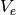 and
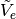 used for time propagation.
and the potential operators 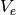 and
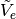 used for time propagation.Parameters: - parameters – The set of simulation parameters. It must contain at least
the semi-classical parameter
 and the
time step size
and the
time step size  .
. - potential (A
MatrixPotentialinstance.) – The potential governing the time evolution. - initial_values (A
WaveFunctioninstance.) – The initial values 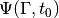 given in the canonical basis.
Raise: ValueErrorIf the number of components of does not match the
number of energy surfaces 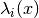 of the potential.
does not match the
number of energy surfaces 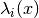 of the potential.- parameters – The set of simulation parameters. It must contain at least
the semi-classical parameter
-
get_operators()[source]¶ Get the kinetic and potential operators
 and 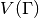.
and 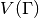.Returns: A tuple  containing two
containing two ndarrays.
-
get_potential()¶ Returns the potential
used for time propagation.Returns: A MatrixPotentialsubclass instance.
-
get_wavefunction()[source]¶ Get the wavefunction that stores the current data 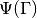.
Returns: The WaveFunctioninstance.
-
post_propagate()¶ Given the wavefunction
 at final time
at final time  ,
perform some computations exactly once after running the ordinary
time propagation and before each time simulation data will be saved.
,
perform some computations exactly once after running the ordinary
time propagation and before each time simulation data will be saved.This method does not raise an exception but instead just does nothing and returns.
-
pre_propagate()¶ Given the wavefunction
at initial time  ,
perform some computations exactly once before running the ordinary
time propagation and after each time simulation data was saved.
,
perform some computations exactly once before running the ordinary
time propagation and after each time simulation data was saved.This method does not raise an exception but instead just does nothing and returns.
-
 of components of
of components of  , calculate
new values 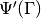 at time
, calculate
new values 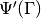 at time  . We perform exactly
one single timestep of size
. We perform exactly
one single timestep of size